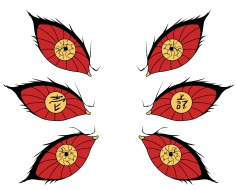
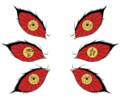

Akaza
Akaza é um antagonista principal da série de mangá/anime Demon Slayer: Kimetsu no Yaiba. Ele é um demônio servindo diretamente sob o comando de Muzan Kibutsuji, e atualmente ocupa a posição de Lua Superior Três dos Doze Kizuki. Mais de um século atrás, Akaza era um humano com o nome de Hakuji antes de ser transformado em um demônio pessoalmente por Muzan. Ele apareceu pela primeira vez como o antagonista final do Arco do Trem Infinito. e ficou ressentido com Tanjiro porque Muzan o repreendeu por ser incapaz de tirar sua vida. Mais tarde, ele lutou contra Giyu e Tanjiro na Fortaleza do Infinito até a morte, mas não antes de conseguir se lembrar de seu passado e tirar a própria vida como um ato de remorso e finalmente se reunir com seus entes queridos enquanto sua vida desaparece.

Douma
Primeiro, Douma em sua vida como uma pessoa, era considerado uma espécie de divindade por causa de seus olhos cor de arco-íris. No entanto, o rapaz nunca foi capaz de acreditar na existência de uma vida após a morte, usando de sua fama como uma espécie de fachada apenas por possuir uma beleza fora do comum. Logo, ele tem habilidade capaz de absorver com facilidade grandes massas de carne sem precisar comê-las. Assim, Douma possuía uma regeneração extremamente rápida, visto que qualquer dano causado em seu corpo, não passava de lembrança. De tal modo que esse fato levou o intérprete a viver se auto machucando por simples prazer.


Kokushibou
Kokushibo (黑死牟) é o antagonista secundário da série de mangá/anime Demon Slayer: Kimetsu no Yaiba. Ele é o membro mais forte dos Doze Kizuki, sendo o Lua Superior Um e o arqui-inimigo de seu irmão gêmeo mais novo, Yoriichi Tsugikuni.
"
Eu nunca poderia agarrar nada. Nada mesmo.
Eu abandonei a minha casa. Abandonei minha esposa e filhos. Abandonei a minha humanidade.
Eu cortei meu descendente e abandonei ser um samurai. Mas mesmo tudo isso não foi suficiente?
Você disse que aqueles que dominam seus caminhos chegam todos ao mesmo lugar. Mas eu nunca cheguei lá.
Eu não conseguia ver o mesmo mundo que você via. Por que eu não poderia deixar nada para trás? Por que eu não poderia me tornar alguém conhecido?
Por que somos tão diferentes? Por que raios eu nasci? Me diga... Yoriichi.
"
- Kokushibou em suas últimas palavras.

 
